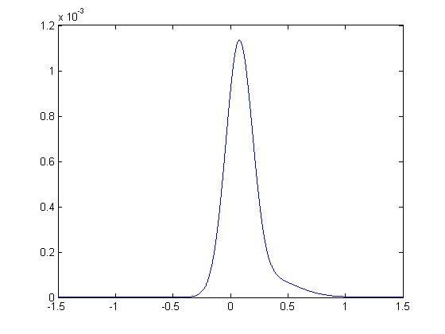
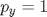

cfjump
Library of transforms (moment generating functions) of commonly ecountered jump distributions in finance. Part of the CFH Toolbox.
Syntax
T = cfjump(C,PAR,TYPE)
Returns evaluations of the moment generating function of a certain jump distribution.
Input Arguments
C is a (NX)x(K) array of evaluation points. The parameter structure PAR should correspond to the dimension (NX)|of the state vector. The argument |TYPE specifies the jump distribution:
- TYPE='Merton' returns normally distributed jumps. The corresponding parameters are PAR.MuJ, a (NX) vector of expected jump sizes and PAR.SigmaJ, the jump size covariance matrix. Set all elements that do not jump to zero. The number of jump components NJ is driven by the third dimension of PAR.SigmaJ. If NJ>1, PAR.MuJ is a (NX)x(NJ) matrix where each column k corresponds to the covariance matrix PAR.SigmaJ(:,:,k).
- TYPE='Exponential' returns exponentially distributed jumps. The corresponding parameter structure is PAR.MuJ, which is a (NX)x(1) vector of expected jump sizes. Set all elements that do not correspond to a jump to zero.
- TYPE='DoubleExponential' returns double exponentially distributed jumps. The corresponding parameters are PAR.pUp, which contains the (NX)x(1) vector of probabilities of positive jumps. PAR.mUp stores the expected positive jump sizes, PAR.mDown stores the expected negative jump sizes (absolute values).
Contents
Example 1: Merton Jumps
Assume that we are interested in the ratio of two asset prices which follow a bivariate process with correlated jumps of constant intensity:
tau = 1; X0 = 110; Y0 = 100; rf = 0.05; sX = 0.20; sY = 0.25; rhoX = 0.70; rhoY = 0.30; COV = sX*sY*(rhoX*rhoY + sqrt(1-rhoX^2)*sqrt(1-rhoY^2)); H0 = [sX^2 COV ; COV sY^2]; K0 = rf - 1/2*[sX^2 ; sY^2]; R0 = rf; x0 = log([X0 ; Y0]);
We assume jumps in :
lambda = 0.15;
par.MuJ = [0.00 ; -0.25];
par.SigmaJ = [0 0 ; 0 0.20^2];
jump = @(c) cfjump(c,par,'Merton');
The drift adjustment and additional coefficients are
K0 = K0 - lambda*[jump([1;0])-1 ; jump([0;1])-1]; L0 = lambda;
The resulting characteristic function is
cf = @(u) cfaffine([1;-1]*u,x0,tau,K0,[],H0,[],R0,[],L0,[],jump,1) [f x] = cf2pdf(cf); plot(x,f)
cf =
@(u)cfaffine([1;-1]*u,x0,tau,K0,[],H0,[],R0,[],L0,[],jump,1)
 Example 2: Two sided and one sided exponential jumps
In this example, we discuss a model featuring stochastic volatility, double exponential jumps in the underlying, exponential jumps in volatility and a stochastic jump intensity. The entries of the three dimensional state variable are:
where .
We will model jumps in the asset price as a double exponential distribution, whereas the variance process jumps according to an exponential distribution on the positive half axis. Thus, when the counting variable jumps, both and  jump, but their jump sizes are independent.
jump, but their jump sizes are independent.
The double exponential distribution of will draw from an exponential distribution on the positive reals with probability . In this case, the random variable will follow an exponential distribution with mean . With complementary probability  , the random variable will be drawn from an exponential distribution over the negative reals, with corresponding mean jump size . The corresponding probability density function is:
, the random variable will be drawn from an exponential distribution over the negative reals, with corresponding mean jump size . The corresponding probability density function is:
When setting , the standard exponential distribution with expected value is recovered, when letting , we obtain the exponential distribution over the negative reals with expected value .
For the first moments to exist, we require that .
Let us translate this model into AJD coefficients and the correct jump transform specification. We assume that positive jumps in the log asset price occur in 40% of all cases whereas we naturally require that all variance jumps are positive. As we do not model jumps in the intensity process itself, we set the mean upward and downward jump sizes to zero:
par.pUp = [0.40 1 0.5]'; par.mUp = [0.05 0.04 0]'; par.mDown = [0.12 0 0]';
The corresponding jump transform is
jump = @(u) cfjump(u,par,'DoubleExponential');
The jump compensation in the log asset price is
m = jump([1 0 0]')-1;
Writing the remaining AJD parameters:
rf = 0.05; tau = 1; S0 = 120; s0 = log(S0); kV = 1.2; tV = 0.20^2; sV = 0.10; rho = -0.7; v0 = 0.25^2; kL = 0.85; tL = 0.10; sL = 0.05; l0 = 0.07; x0 = [s0 v0 l0]'; K0 = [rf kV*tV kL*tL]'; K1 = [0 -1/2 -m ; 0 -kV 0 ; 0 0 -kL]; H0 = zeros(3); H1 = zeros(3,3,3); H1(:,:,2) = [1 sV*rho 0 ; sV*rho sV^2 0 ; 0 0 0]; H1(3,3,3) = sL^2; R0 = rf; R1 = [0 0 0]'; L0 = 0; L1 = [0 0 1]';
Finally, we may state the characteristic function and, as usual, test it:
cf = @(u) cfaffine(u,x0,tau,K0,K1,H0,H1,R0,R1,L0,L1,jump) cf([0 -i])
cf =
@(u)cfaffine(u,x0,tau,K0,K1,H0,H1,R0,R1,L0,L1,jump)
ans =
0.95123 120
Let us find the implied volatilies and plot them against the strikes
K = S0*[0.65:0.05:1.35]'; C = cf2call(cf,struct('x0',s0,'K',K)); plot(K,blsimpv(S0,K,0.05,tau,C),'ro') title('Strikes vs. implied volatility of our AJD model'); xlabel('strike'),ylabel('implied volatility')
Example 3: Multiple jumps
If you want to introduce multiple jumps, potentially of different types, you can use cfjump multiple times. Let's assume you want to employ multivariate normally distributed jumps in variables 1 and 2 and add an additional jump component, itself controlling jumps in process 3. You could write:
par.MuJ = []; par.SigmaJ = []; par.MuJ(:,1)= [-0.25 -0.10 0]'; par.MuJ(:,2)= [0 0 0.15]'; par.SigmaJ = [0.2*0.2 0.2*0.5*0.3 0 ; 0.2*0.5*0.3 0.3*0.3 0 ; 0 0 0]; jump1 = @(c) cfjump(c,par,'Merton'); jump2 = @(c) cfjump(c,struct('MuJ',par.MuJ(:,2)),'Exponential'); jump = @(c) [jump1(c) ; jump2(c)];
The resulting transform expects an input (NX)x(K) and returns the output of size (NJ)x(K). Let us find the expected jump size induced from each process:
jump(eye(3))-1
ans =
-0.20547 -0.053515 0
0 0 0.17647
Example 4: Extended transforms and jumps
In this example, we compute the price of an Asian option on a short rate process modelled as CIR + Exponential jumps. Please see <cfaffineEx.html cfaffineEx for some insights into the pricing of Asian options and the required augmentation of the state space.
Let us assume the following initial values and parameters:
tau = 2; r0 = 0.05; sR = 0.10; kR = 0.9; tR = 0.08; lambda = 0.15; MuJ = 0.03;
The option will pay the positive difference between the average short rate over the next two years and the strike level of 4%:
X = 0.04;
The required AJD coefficients, jump transform and jump gradients are:
K0 = [kR*tR 0]'; K1 = [-kR 0 ; 1 0]; H0 = zeros(2); H1 = zeros(2,2,2); H1(1,1,1) = sR^2; R0 = 0; R1 = [1 0]'; L0 = lambda; L1 = []; par.MuJ = [MuJ 0]'; jump = @(c) cfjump(c,par,'Exponential'); jumpGrad = @(c) cfjump(c,par,'ExponentialGrad'); cf = @(u) cfaffine([0 1]'*u,[r0 0]',tau,K0,K1,H0,H1,R0,R1,L0,L1,jump,1) cfEx = @(u) cfaffineEx([0 1]'*u,[0 1]',[r0 0]',tau,K0,K1,H0,H1,R0,R1,L0,L1,jump,jumpGrad,1)
cf =
@(u)cfaffine([0,1]'*u,[r0,0]',tau,K0,K1,H0,H1,R0,R1,L0,L1,jump,1)
cfEx =
@(u)cfaffineEx([0,1]'*u,[0,1]',[r0,0]',tau,K0,K1,H0,H1,R0,R1,L0,L1,jump,jumpGrad,1)
The function cf2gaby recovers the expectation and the extended expectation as:
e1 = 1/tau*cf2gaby(cfEx,0,-1,-X*tau); e2 = X*cf2gaby(cf,0,-1,-X*tau); price = e1-e2;
Let us compare the result with a simulation study
nSim = 100000; nStep = 5000; dt = tau/nStep; x0 = r0; y0 = 0; x = x0*ones(nSim,1); y = y0*ones(nSim,1); for k = 1:nStep x = x ... + kR*(tR-x)*dt ... + sR*sqrt(x).*randn(nSim,1)*sqrt(dt) ... + (rand(nSim,1)<=lambda*dt).*exprnd(MuJ,nSim,1); y = y + x*dt; end df = exp(-y); e1Sim = mean(y/tau.*(y/tau>X).*df); e2Sim = mean(X.*(y/tau>X).*df); priceSim = e1Sim-e2Sim; [price priceSim]
ans =
0.024757 0.024749